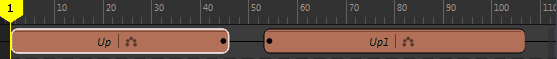
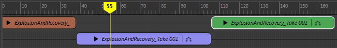
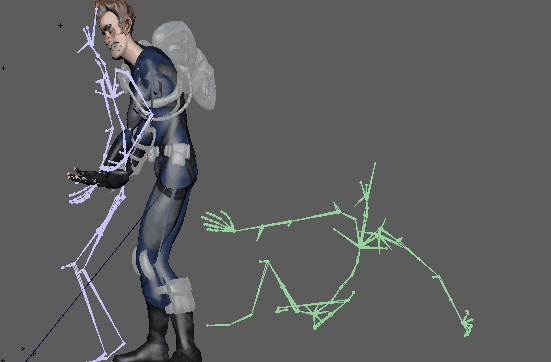

在轨迹上激活“重影”(Ghosting)可查看动画的进度。这样，您可以在轨迹上查看所有动画片段的开始位置和结束位置，这对匹配姿势或阻塞动画非常有用。
例如，以下图像显示了将动画球体一分为二的动画片段。该片段的后半部分已沿轨迹方向进一步移动，使这两个片段之间产生间隙。

注： 由于已为轨迹激活“重影”(Ghosting)，因此轨迹上这两个片段的片段名称旁边都将显示  图标。
图标。
图标。

注： 此过程介绍如何显示选定轨迹上的所有重影。如果只要查看特定片段的重影，请参见下文中的“在时间编辑器中查看片段重影”步骤。时间编辑器的默认重影是动画的骨架或根对象。如果要使用非默认重影预先可视化动画，请参见创建自定义片段重影。
查看轨迹上所有片段的重影
- 在时间编辑器中选择轨迹。
- 在相应轨迹的名单控件中激活“重影”(Ghost)图标 。
片段的名称旁边将显示“重影”(Ghost)图标。

在进行 crossfade 或融合时，重影显示当前帧处的对象姿势/状态。重影的颜色与对应的片段相同。若要自定义轨迹重影颜色，请在属性编辑器中选择片段的新颜色。请参见属性编辑器中的时间编辑器。
使用过渡时（或者如果有两个片段由一个间隙分隔），则重影描绘第一个片段的最后一个值；如果当前时间介于这两个片段之间，则描绘第二个片段的第一个值。
